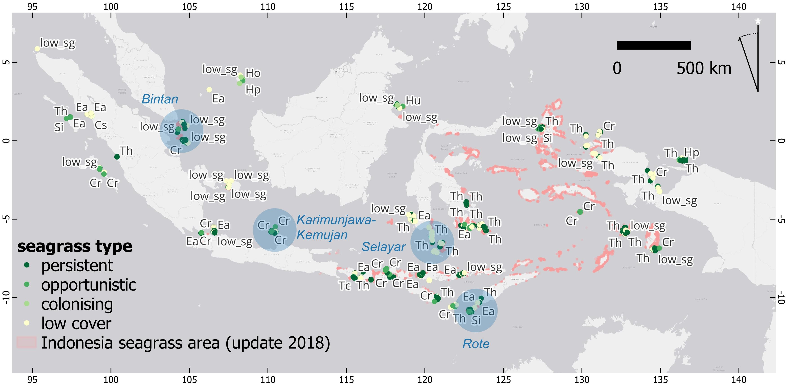

Seagrass meadows store carbon in their leaves, roots, and the mud beneath them. Indonesia holds one of the largest shares of this habitat on Earth, an estimated 8,320 to 18,000 square kilometres, around 5 to 7 percent of the global total. This site brings together satellite-based tools and findings from ongoing PhD research at the University of Queensland and BRIN, mapping seagrass carbon across the country from 2017 to 2024.
Seagrasses are flowering plants that grow underwater in shallow, sheltered coastal waters. Indonesia holds one of the most varied seagrass floras in the world, from dense meadows of the large, strap-leaved Enhalus acoroides to smaller, fast-growing species only a few centimetres tall. How well a meadow grows depends on water temperature, salinity, light, depth, and the type of seabed beneath it.
These meadows do more than store carbon. Their leaves slow down water movement and their roots bind loose sediment, which helps stabilise the coastline. They also shelter fish and invertebrates, supporting the fisheries that coastal communities depend on. Seagrass covers less than 0.2 percent of the ocean floor worldwide, yet holds around 10 percent of the carbon buried in marine sediment each year, a share far larger than its size would suggest.

Seagrass species and life-history type recorded at survey sites across Indonesia. Dot colour follows the persistent, opportunistic, colonising, and low cover classification shown in the legend. Species codes: Ea, Enhalus acoroides; Th, Thalassia hemprichii; Cr, Cymodocea rotundata; Cs, Cymodocea serrulata; Si, Syringodium isoetifolium; Ho, Halophila ovalis; Hp, Halodule pinifolia; Hu, Halodule uninervis; Tc, Thalassodendron ciliatum. "low_sg" marks sites recorded as low seagrass cover rather than a single dominant species. Background shading shows Indonesia's seagrass area from a 2018 national compilation.
Field surveys and satellite imagery were combined to map seagrass carbon across Indonesia every year from 2017 to 2024.
Using satellite imagery and field data, this model estimates the total carbon stored in Indonesia's seagrass leaves each year. Estimates stayed within a narrow band across eight years, from about 169,000 to 194,000 tonnes of carbon, a pattern that points to real year-to-year change in canopy condition rather than noise in the model. Vertical bars show the 95% confidence interval for each year.
Pixel-based total above-ground carbon (AGC), in kilo tons of carbon, across Indonesia's 6,895.80 km² mapped seagrass extent. Orange bars show the 95% confidence interval; 2024 has no interval available. Source: PhD thesis, Chapter 5, Appendix E, Table S2.
Draw a shape anywhere on the map and get an above-ground carbon estimate for that exact area, along with a trend forecast through 2024.
Open the AGC calculatorFollow seagrass presence over time in monitored areas, built from Sentinel-2 imagery and a classifier trained on field surveys.
Open the change alert tool